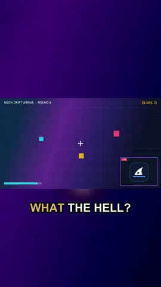
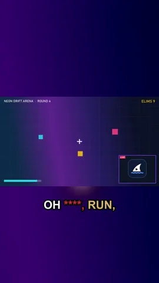

Работает с Kickа также с Twitch, YouTube и любым видеофайлом
На входе стрим, на выходе готовые клипы.
SharkyClips находит лучшие моменты в записи вашего стрима и превращает их в вертикальные клипы для YouTube Shorts, TikTok и Instagram Reels. Всё работает на вашем компьютере.
- 100% бесплатно
- Без водяного знака
- Без ограничений
- Работает на вашем ПК
Настоящие результаты
Каждая пара показывает момент из длинного стрима и тот же момент в клипе, который SharkyClips сделал из него сам: обрезанном, в формате 9:16, с субтитрами и названием.
 Стрим · 4:39
Стрим · 4:39
Готовый клипOne grenade, triple kill! What did I see? 🤯Выбран за громкую реакцию, взрыв чата (в 14 раз больше сообщений) и «what the hell». Оценка 93.  Стрим · 1:11
Стрим · 1:11 Готовый клип
Готовый клипOne versus three? I pulled off a CLUTCH! 😱Камбэк 1 против 3: громкий голос, чат в 12 раз быстрее, «no way» и «clutch». Оценка 78.  Стрим · 5:28
Стрим · 5:28 Готовый клип
Готовый клипDid that last throw really just win the game?Момент победы: короткая пауза, потом крики и «let's go». Оценка 85.  Стрим · 0:21
Стрим · 0:21 Готовый клип
Готовый клипDid you really see that double elimination happen?Двойное убийство: «oh my god», громкая реакция и чат в 11 раз быстрее. Оценка 82.  Стрим · 2:53
Стрим · 2:53
Готовый клипZero armor, reckless run, barely alive! 😱Паническое бегство от босса. Ругательство запикано и скрыто в субтитрах. Оценка 64.  Стрим · 3:51
Стрим · 3:51 Готовый клип
Готовый клипPracticed all week, then finally landed itПрыжок, отработанный за неделю: «yes!» и «LETS GOOO» в чате. Оценка 75.
Сделано из нашего демо-стрима (нарисованная игра, компьютерный голос и сгенерированный чат), поэтому в нём нет реальных людей, игр или каналов. Ничего не редактировалось вручную.
Как это работает
Три шага. Монтаж между ними делает SharkyClips.
Добавьте стрим
Перетащите видеофайл или вставьте ссылку на Twitch, YouTube или Kick. SharkyClips также может взять последнюю запись из папки OBS.
SharkyClips делает клипы
Он находит громкие, смешные и захватывающие моменты, аккуратно их режет, добавляет субтитры, запикивает мат и пишет заголовки.
Проверьте и поделитесь
Посмотрите клипы, измените что хотите и опубликуйте их в YouTube Shorts, TikTok и Instagram Reels.


Сделано для стримеров
Находит моменты
Громкие реакции, смех, взрывы чата и игровые события становятся одним списком клипов по рейтингу.
Запикано и проверено
Мат запикивается на 11 языках, и каждый готовый клип прослушивается ещё раз.
Одна кнопка «Поделиться»
YouTube Shorts, TikTok и Instagram Reels с правильной подписью и ограничениями для каждого.
Помощник для TikTokНовое
Небольшое расширение для Edge, Chrome, Opera и Brave заполняет загрузку в TikTok. Вы проверяете и сами нажимаете «Опубликовать».
Слайд-шоу из фотоНовое
Превратите от 2 до 20 фото в вертикальное видео «до и после» с подписями и музыкой.
Темы и цветаНовое
Четыре цветовые темы приложения (Классика, Океан, Shark Sign, Высокий контраст), тёмные или светлые, и ваш собственный акцентный цвет.
SharkyClips в сравнении
Данные с официального сайта каждого продукта, проверено 28 ноября 2026 г.. Цены в долларах США, без налогов. Тарифы меняются, поэтому перед решением загляните на их страницы.
| Параметр | SharkyClips | Eklipse | OpusClip | StreamLadder |
|---|---|---|---|---|
| Цена | Бесплатно (открытый код, лицензия MIT) | Бесплатная проба; Premium от 24,99 $ в месяц или 179,99 $ в год | Бесплатный тариф; платные от 15 $ в месяц | Бесплатный тариф; платные от 15 $ в месяц или 150 $ в год |
| Водяной знак | Никогда | На бесплатных экспортах | На бесплатном тарифе | Только если бесплатный клип использует платные функции |
| Лимиты клипов | Нет | Бесплатно: предпросмотр клипов недавнего стрима; Premium: безлимитная нарезка ИИ | Бесплатно: 60 минут обработки в месяц, файлы хранятся 3 дня | Без лимита минут; нарезка целых стримов ИИ с тарифа Creator (27 $ в месяц); бесплатный экспорт в 720p |
| Где обрабатывается видео | На вашем ПК: ничего не загружается | Онлайн: их ИИ-монтаж работает в облаке | Онлайн: вы загружаете файл или вставляете ссылку | Онлайн: вы загружаете файл или вставляете ссылку |
| Что нужно | ПК с Windows 10 или 11 и 8 ГБ ОЗУ (macOS: проверено меньше) | Браузер и аккаунт | Браузер и аккаунт | Браузер и аккаунт |
| Распознавание игры | Читает экран игры в Delta Force и League of Legends; в других играх — по голосу, звуку и чату | Более 3000 игр, настройка под каждую категорию игр | Не указано | Не указано |
| Kick | Видео с Kick вместе с чатом | Импортирует стримы с Kick | Поддерживает ссылки на Kick | Клипы с Kick на бесплатном тарифе; целые стримы с Kick с тарифа Creator |
| Запикивание мата | Автоматически на 11 языках, и каждый клип проверяется ещё раз | Не указано | С тарифа Pro (29 $ в месяц) | Автоматическая цензура слов (тариф чётко не указан) |
| Языки | 11 (приложение, распознавание речи и субтитры) | Для субтитров не указано; голосовые команды на английском | Более 25 для субтитров | Более 90 для субтитров |
«Не указано» значит, что мы не нашли этого на их официальных страницах. Что-то неверно или устарело? Напишите нам через страницу контактов, и мы исправим.
Источники (14 официальных страниц)
- eklipse.gg
- eklipse.gg/help/how-much-does-eklipse-premium-cost
- eklipse.gg/help/what-are-the-main-differences-between-the-free-and-premium-plans
- eklipse.gg/help/will-my-exported-video-have-a-watermark
- eklipse.gg/help/import-kick-streams-to-eklipse
- eklipse.gg/features/ai-edit
- opus.pro/pricing
- help.opus.pro/docs/article/plans-and-credits.md
- help.opus.pro/docs/article/video-sources-supported.md
- help.opus.pro/docs/article/video-languages-supported.md
- streamladder.com/pricing
- streamladder.com/clipgpt/import-from-kick
- streamladder.com/clip-editor/word-censoring
- streamladder.com/clip-editor/captions
Как SharkyClips использует YouTube
Подключать YouTube не обязательно. Если вы его подключите, SharkyClips использует официальные сервисы YouTube API только для загрузки и управления выбранными вами клипами и чтобы показать их результаты. Ваши данные YouTube остаются на вашем компьютере.
Показать разрешения и то, как используются ваши данные YouTube
Загрузка на YouTube необязательна. Если вы подключите канал в разделе Настройки → YouTube, SharkyClips использует официальные сервисы YouTube API ровно для этого и только когда вы просите:
| Действие | Разрешение (scope) | Когда |
|---|---|---|
| Загрузить подготовленный вами клип (название, описание, теги, доступ, время публикации, плейлист, обложка); изменить его данные или время, опубликовать раньше или удалить, если вы отменили его до публикации; показать, какой канал подключён; читать просмотры, лайки и статус доступа видео, загруженных через SharkyClips | youtube | Когда вы нажимаете Опубликовать сейчас или планируете клип (загружается заранее, пока компьютер включён), редактируете или отменяете его в Библиотеке, открываете Настройки, и примерно раз в 6 часов, пока приложение работает |
| Читать средний процент просмотра этих же видео, чтобы понять, какое начало (хук) удерживает зрителей | yt-analytics.readonly | Только для клипов, загруженных в рамках теста хуков, после 48 часов в открытом доступе |
Эти данные хранятся только на вашем компьютере и используются только для того, чтобы показать вам результаты и улучшить оценки клипов для вашего канала. У SharkyClips нет сервера: разработчики никогда не получают, не видят и не передают ваши данные YouTube, и ничего не используется для рекламы. SharkyClips никогда не читает чужие каналы, ваши комментарии, подписчиков или историю просмотров. Он изменяет или удаляет только видео, загруженные через SharkyClips, и только по вашей просьбе (например, когда вы редактируете или отменяете запланированный клип).
Вы можете отключиться в любой момент в Настройки → YouTube (это отзывает токен доступа в Google) или убрать доступ в разрешениях аккаунта Google. Подключаясь, вы принимаете Условия использования YouTube; Google обрабатывает ваши данные по Политике конфиденциальности Google. Прочитайте нашу полную политику конфиденциальности и условия использования.
Бесплатно, открыто, приватно
SharkyClips распространяется по лицензии MIT: без подписки, без кредитов, без водяных знаков. Нет аккаунта и слежки, а ваши видео остаются на компьютере, пока вы ими не поделитесь. Исходный код и все версии на GitHub.